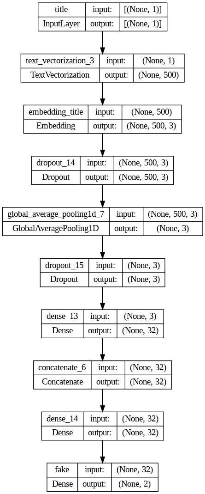
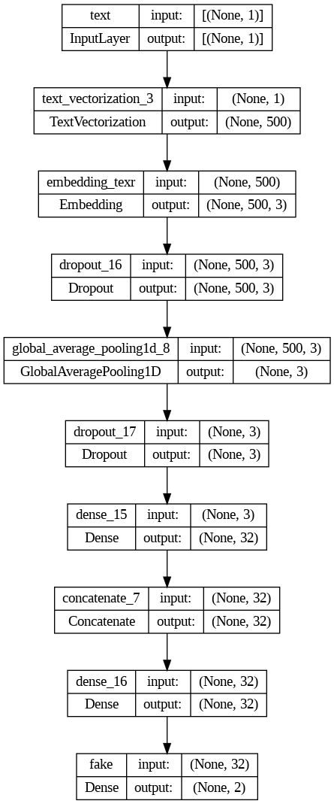
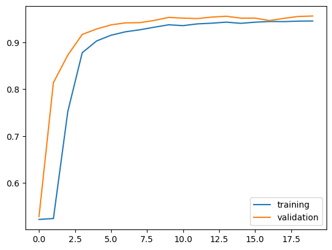
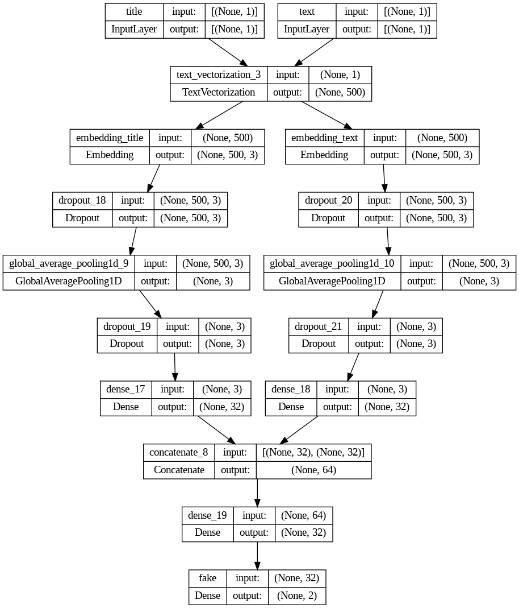
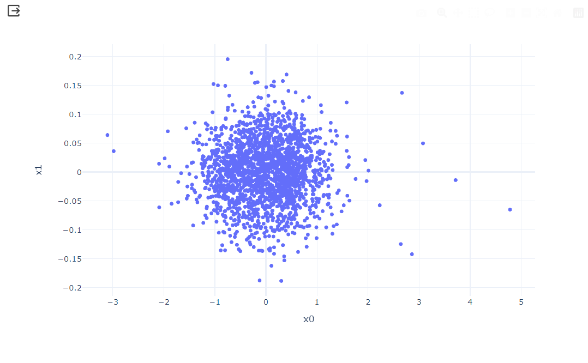

import numpy as np
from matplotlib import pyplot as plt
import time
import sqlite3
import pandas as pdClassifying “Fake News”
Part 1: Acquire Training Data
We begin by reading directly into Python the training data set provided by the following URL.
The dataset is organized as follows:
title column: title of the article
text column: full article text
fake column: 0 if the article is true and 1 if the article contains fake news, as determined by the authors of paper (from URL)
# csv file
train_url = "https://github.com/PhilChodrow/PIC16b/blob/master/datasets/fake_news_train.csv?raw=true"
# read in csv file
train_df = pd.read_csv(train_url)
# display file
train_df| Unnamed: 0 | title | text | fake | |
|---|---|---|---|---|
| 0 | 17366 | Merkel: Strong result for Austria's FPO 'big c... | German Chancellor Angela Merkel said on Monday... | 0 |
| 1 | 5634 | Trump says Pence will lead voter fraud panel | WEST PALM BEACH, Fla.President Donald Trump sa... | 0 |
| 2 | 17487 | JUST IN: SUSPECTED LEAKER and “Close Confidant... | On December 5, 2017, Circa s Sara Carter warne... | 1 |
| 3 | 12217 | Thyssenkrupp has offered help to Argentina ove... | Germany s Thyssenkrupp, has offered assistance... | 0 |
| 4 | 5535 | Trump say appeals court decision on travel ban... | President Donald Trump on Thursday called the ... | 0 |
| ... | ... | ... | ... | ... |
| 22444 | 10709 | ALARMING: NSA Refuses to Release Clinton-Lynch... | If Clinton and Lynch just talked about grandki... | 1 |
| 22445 | 8731 | Can Pence's vow not to sling mud survive a Tru... | () - In 1990, during a close and bitter congre... | 0 |
| 22446 | 4733 | Watch Trump Campaign Try To Spin Their Way Ou... | A new ad by the Hillary Clinton SuperPac Prior... | 1 |
| 22447 | 3993 | Trump celebrates first 100 days as president, ... | HARRISBURG, Pa.U.S. President Donald Trump hit... | 0 |
| 22448 | 12896 | TRUMP SUPPORTERS REACT TO DEBATE: “Clinton New... | MELBOURNE, FL is a town with a population of 7... | 1 |
22449 rows × 4 columns
Part 2: Make a Dataset
The following imports from the Natural Language Toolkit (nltk) are used to determine stopwords to be removed from the article text and title. These are words such as “the,” “and,” or “but” that are usually considered to be uninformative.
# import `stopwords` from `nltk.corpus` to remove stopwords from the columns
import nltk
nltk.download('stopwords')
from nltk.corpus import stopwords
stop = stopwords.words('english')[nltk_data] Downloading package stopwords to /root/nltk_data...
[nltk_data] Package stopwords is already up-to-date!from tensorflow import keras
from tensorflow.keras import layers
from tensorflow.keras import losses
from tensorflow.keras import utils
from tensorflow.keras.layers import TextVectorizationNow, we need to create a function that will return a TensorFlow dataset that has two inputs and one output. The input should be in the form (title, text), while the output should only consist of the fake column.
The batch operation is also performed on the dataset prior to it being returned. This causes the model to train on chunks of data rather than individual rows. The purpose of batching is to greatly increase the speed of training, but sometimes accuracy may be reduced in the process. This example batches 100 rows.
def make_dataset(df):
"""
1. Changes text to lowercase
2. Remove stopwords (words usually considered to be uninformative such as
"the," "and," or "but") from the article `text` and `title`
3. Construct and return a `tf.data.Dataset`
Returns a `tf.data.Dataset` with 2 inputs and 1 ouput
"""
# make columns with text to be all lowercase
df['title'] = df['title'].apply(lambda x: x.lower() if isinstance(x, str) else x)
df['text'] = df['text'].apply(lambda x: x.lower() if isinstance(x, str) else x)
# remove stopwords
df['title'] = df['title'].apply(lambda x: ' '.join([word for word in x.split() if word not in (stop)]))
df['text'] = df['text'].apply(lambda x: ' '.join([word for word in x.split() if word not in (stop)]))
# create a TensorFlow `Dataset` from our dataframe
# used particularly in text classification problems
# inputs: form of (`title` column, `text` column)
my_data_set = tf.data.Dataset.from_tensor_slices(({"title": df[['title']],
"text": df[['text']]},
{"fake": df[['fake']]}))
# batch the Dataset prior to returning it
# batching causes the model to train on chunks of data rather than individual rows (which
# can reduce accuracy, but also greatly increase speed of training)
my_data_set = my_data_set.batch(100)
return my_data_setThe make_dataset function will now be called on the training dataframe to produce a TensorFlow dataset.
Validation Data
Now, we will perform the train-test split. We will also take out a small validation set, which is 20% of the primary dataset.
train_data = make_dataset(train_df).shuffle(buffer_size = len(make_dataset(train_df)), reshuffle_each_iteration=False)train_size = int(0.8*len(train_data))
train = train_data.take(train_size)
# split 20% of primary Dataset to use for validation
val_size = int(0.2*len(train_data))
val = train_data.skip(train_size).take(val_size)
test = train_data.skip(train_size + val_size)len(train), len(val), len(test)(180, 45, 0)Base Rate
The base rate refers to the accuracy of a model that always makes the same guess (for example, such a model might always say “fake news!”).
By examining the labels on the training set, it is determined that the base rate for this dataset is about 52%.
# Determine base rate for data set by examining labels on training set
# Base rate is accuracy of model that always makes the same guess
num_real = 0
num_fake = 0
# Iterate through all of the batches in the training dataset
for batch in train.take(-1):
# Then iterate through all of the labels in the "fake" column of the training dataset
for label in batch[1]["fake"].numpy():
# Increase the count for "real" news if the label equals 0
if label == 0:
num_real += 1
# Increase the count for "fake" news if the label equals 1
elif label == 1:
num_fake += 1
# Print number of real news articles
print(f"Number of real news articles: {num_real}")
# Print number of fake news articles
print(f"Number of fake news articles: {num_fake}")
# Print base rate
print(f"Base rate: {num_fake/(num_fake + num_real)}")Number of real news articles: 8610
Number of fake news articles: 9390
Base rate: 0.5216666666666666Text Vectorization
The base rate is quite low at only around 52% accuracy, but we want to create models that can perform signficantly better! Therefore, we will need layers built on text vectorization as seen below to be employed by our models later.
import re
import string
from keras import layers, losses
from keras.layers import TextVectorization
# preparing a text vectorization layer for tf model
size_vocabulary = 2000
def standardization(input_data):
lowercase = tf.strings.lower(input_data)
no_punctuation = tf.strings.regex_replace(lowercase,
'[%s]' % re.escape(string.punctuation),'')
return no_punctuation
title_vectorize_layer = TextVectorization(
standardize=standardization,
max_tokens=size_vocabulary, # only consider this many words
output_mode='int',
output_sequence_length=500)
title_vectorize_layer.adapt(train.map(lambda x, y: x["title"]))Part 3: Creating the Models
We will employ Keras models to answer the following:
RESEARCH QUESTION:
When detecting fake news, is it most effective to focus on only the title of the article, the full text of the article, or both?
General Visualization Function:
Each of the following general visualization functions is used to visualize the model and its training histories, respectively. Therefore, it will be called for each model with the model name being passed in each time.
from keras import utils
def vis_plots(model):
plot = utils.plot_model(model, "output_filename.png",
show_shapes=True,
show_layer_names=True)
return plotdef graph_plots(model):
plt.plot(history1.history["accuracy"],label='training')
plt.plot(history1.history["val_accuracy"],label='validation')
plt.legend()Inputs and Output:
title_input = tf.keras.Input(shape = (1),
name = "title",
dtype = "string")
text_input = tf.keras.Input(shape = (1),
name = "text",
dtype = "string")Model 1: Article TITLE as Input
Our first model will use only the article title as an input. We will now create the pipeline for the title, which involves each of the layers (input and output) for processing the title.
# pipeline for title
# layers for processing title
title_features = title_vectorize_layer(title_input)
title_features = layers.Embedding(size_vocabulary, 3, name = "embedding_title")(title_features)
title_features = layers.Dropout(0.2)(title_features)
title_features = layers.GlobalAveragePooling1D()(title_features)
title_features = layers.Dropout(0.2)(title_features)
title_features = layers.Dense(32, activation = "relu")(title_features)# creating output layer
main1 = layers.concatenate([title_features], axis = 1)
main1 = layers.Dense(32, activation = "relu")(main1)
output1 = layers.Dense(2, name = "fake")(main1)# creating model with input and output
model1 = tf.keras.Model(inputs = title_input,
outputs = output1)# compile model
model1.compile(optimizer='adam',
loss=tf.keras.losses.SparseCategoricalCrossentropy(from_logits=True),
metrics=['accuracy'])# train model
history1 = model1.fit(train_data,
validation_data=val,
epochs = 20,
verbose = True)Epoch 1/20
225/225 [==============================] - 11s 42ms/step - loss: 0.6923 - accuracy: 0.5221 - val_loss: 0.6914 - val_accuracy: 0.5282
Epoch 2/20
225/225 [==============================] - 1s 6ms/step - loss: 0.6909 - accuracy: 0.5240 - val_loss: 0.6862 - val_accuracy: 0.8141
Epoch 3/20
225/225 [==============================] - 2s 6ms/step - loss: 0.5646 - accuracy: 0.7527 - val_loss: 0.3401 - val_accuracy: 0.8730
Epoch 4/20
225/225 [==============================] - 1s 6ms/step - loss: 0.3004 - accuracy: 0.8779 - val_loss: 0.2175 - val_accuracy: 0.9171
Epoch 5/20
225/225 [==============================] - 1s 6ms/step - loss: 0.2387 - accuracy: 0.9032 - val_loss: 0.1849 - val_accuracy: 0.9287
Epoch 6/20
225/225 [==============================] - 2s 8ms/step - loss: 0.2089 - accuracy: 0.9154 - val_loss: 0.1698 - val_accuracy: 0.9375
Epoch 7/20
225/225 [==============================] - 1s 5ms/step - loss: 0.1912 - accuracy: 0.9227 - val_loss: 0.1532 - val_accuracy: 0.9418
Epoch 8/20
225/225 [==============================] - 1s 6ms/step - loss: 0.1763 - accuracy: 0.9270 - val_loss: 0.1492 - val_accuracy: 0.9422
Epoch 9/20
225/225 [==============================] - 1s 6ms/step - loss: 0.1676 - accuracy: 0.9325 - val_loss: 0.1406 - val_accuracy: 0.9470
Epoch 10/20
225/225 [==============================] - 1s 6ms/step - loss: 0.1605 - accuracy: 0.9377 - val_loss: 0.1223 - val_accuracy: 0.9535
Epoch 11/20
225/225 [==============================] - 1s 6ms/step - loss: 0.1588 - accuracy: 0.9359 - val_loss: 0.1242 - val_accuracy: 0.9519
Epoch 12/20
225/225 [==============================] - 1s 6ms/step - loss: 0.1532 - accuracy: 0.9396 - val_loss: 0.1244 - val_accuracy: 0.9510
Epoch 13/20
225/225 [==============================] - 1s 6ms/step - loss: 0.1460 - accuracy: 0.9411 - val_loss: 0.1161 - val_accuracy: 0.9541
Epoch 14/20
225/225 [==============================] - 2s 7ms/step - loss: 0.1437 - accuracy: 0.9433 - val_loss: 0.1119 - val_accuracy: 0.9559
Epoch 15/20
225/225 [==============================] - 2s 10ms/step - loss: 0.1433 - accuracy: 0.9408 - val_loss: 0.1189 - val_accuracy: 0.9519
Epoch 16/20
225/225 [==============================] - 2s 9ms/step - loss: 0.1409 - accuracy: 0.9432 - val_loss: 0.1182 - val_accuracy: 0.9519
Epoch 17/20
225/225 [==============================] - 1s 6ms/step - loss: 0.1383 - accuracy: 0.9447 - val_loss: 0.1288 - val_accuracy: 0.9467
Epoch 18/20
225/225 [==============================] - 1s 6ms/step - loss: 0.1394 - accuracy: 0.9445 - val_loss: 0.1196 - val_accuracy: 0.9514
Epoch 19/20
225/225 [==============================] - 1s 6ms/step - loss: 0.1364 - accuracy: 0.9455 - val_loss: 0.1094 - val_accuracy: 0.9555
Epoch 20/20
225/225 [==============================] - 3s 11ms/step - loss: 0.1351 - accuracy: 0.9458 - val_loss: 0.1049 - val_accuracy: 0.9564/usr/local/lib/python3.10/dist-packages/keras/src/engine/functional.py:642: UserWarning: Input dict contained keys ['text'] which did not match any model input. They will be ignored by the model.
inputs = self._flatten_to_reference_inputs(inputs)model1.summary()Model: "model_15"
_________________________________________________________________
Layer (type) Output Shape Param #
=================================================================
title (InputLayer) [(None, 1)] 0
text_vectorization_3 (Text (None, 500) 0
Vectorization)
embedding_title (Embedding (None, 500, 3) 6000
)
dropout_14 (Dropout) (None, 500, 3) 0
global_average_pooling1d_7 (None, 3) 0
(GlobalAveragePooling1D)
dropout_15 (Dropout) (None, 3) 0
dense_13 (Dense) (None, 32) 128
concatenate_6 (Concatenate (None, 32) 0
)
dense_14 (Dense) (None, 32) 1056
fake (Dense) (None, 2) 66
=================================================================
Total params: 7250 (28.32 KB)
Trainable params: 7250 (28.32 KB)
Non-trainable params: 0 (0.00 Byte)
_________________________________________________________________Model 1 Visualization:
vis_plots(model1)
graph_plots(model1)
Model 1 Performance Analysis
Model1, which only uses the article title as an input, consistently performed at accuracies over 90%, with many even over 95%. This suggests that only using the article title gives a fairly accurate prediction as to whether the article is “fake news” or not.
Overfitting, which is observed when the training accuracies are greater than the validation accuracies, does not occur for this model.
Model 2: Article TEXT as Input
Our second model will use only the article text as an input. We will now create the pipeline for the text, which involves each of the layers (input and output) that have the same structure as the previous model (however with text_input instead), for processing the title.
# pipeline for text
# layers for processing text
text_features = title_vectorize_layer(text_input)
text_features = layers.Embedding(size_vocabulary, 3, name = "embedding_texr")(text_features)
text_features = layers.Dropout(0.2)(text_features)
text_features = layers.GlobalAveragePooling1D()(text_features)
text_features = layers.Dropout(0.2)(text_features)
text_features = layers.Dense(32, activation = "relu")(text_features)# creating output layer
main2 = layers.concatenate([text_features], axis = 1)
main2 = layers.Dense(32, activation = "relu")(main2)
output2 = layers.Dense(2, name = "fake")(main2)# creating model with input and output
model2 = tf.keras.Model(inputs = text_input,
outputs = output2)# compile model
model2.compile(optimizer='adam',
loss=tf.keras.losses.SparseCategoricalCrossentropy(from_logits=True),
metrics=['accuracy'])# train model
history2 = model2.fit(train_data,
validation_data=val,
epochs = 20,
verbose = True)Epoch 1/20
225/225 [==============================] - 19s 79ms/step - loss: 0.5940 - accuracy: 0.7068 - val_loss: 0.3057 - val_accuracy: 0.9362
Epoch 2/20
225/225 [==============================] - 3s 11ms/step - loss: 0.2171 - accuracy: 0.9379 - val_loss: 0.1333 - val_accuracy: 0.9636
Epoch 3/20
225/225 [==============================] - 3s 14ms/step - loss: 0.1467 - accuracy: 0.9563 - val_loss: 0.1019 - val_accuracy: 0.9742
Epoch 4/20
225/225 [==============================] - 3s 11ms/step - loss: 0.1223 - accuracy: 0.9643 - val_loss: 0.0887 - val_accuracy: 0.9780
Epoch 5/20
225/225 [==============================] - 3s 11ms/step - loss: 0.1099 - accuracy: 0.9661 - val_loss: 0.0804 - val_accuracy: 0.9816
Epoch 6/20
225/225 [==============================] - 3s 11ms/step - loss: 0.0999 - accuracy: 0.9692 - val_loss: 0.0761 - val_accuracy: 0.9818
Epoch 7/20
225/225 [==============================] - 3s 13ms/step - loss: 0.0905 - accuracy: 0.9718 - val_loss: 0.0647 - val_accuracy: 0.9840
Epoch 8/20
225/225 [==============================] - 3s 11ms/step - loss: 0.0873 - accuracy: 0.9723 - val_loss: 0.0614 - val_accuracy: 0.9856
Epoch 9/20
225/225 [==============================] - 3s 11ms/step - loss: 0.0801 - accuracy: 0.9749 - val_loss: 0.0586 - val_accuracy: 0.9870
Epoch 10/20
225/225 [==============================] - 3s 11ms/step - loss: 0.0749 - accuracy: 0.9780 - val_loss: 0.0506 - val_accuracy: 0.9881
Epoch 11/20
225/225 [==============================] - 3s 14ms/step - loss: 0.0730 - accuracy: 0.9772 - val_loss: 0.0526 - val_accuracy: 0.9885
Epoch 12/20
225/225 [==============================] - 3s 11ms/step - loss: 0.0706 - accuracy: 0.9780 - val_loss: 0.0474 - val_accuracy: 0.9903
Epoch 13/20
225/225 [==============================] - 3s 11ms/step - loss: 0.0664 - accuracy: 0.9791 - val_loss: 0.0466 - val_accuracy: 0.9903
Epoch 14/20
225/225 [==============================] - 3s 13ms/step - loss: 0.0649 - accuracy: 0.9787 - val_loss: 0.0415 - val_accuracy: 0.9912
Epoch 15/20
225/225 [==============================] - 3s 12ms/step - loss: 0.0645 - accuracy: 0.9798 - val_loss: 0.0393 - val_accuracy: 0.9919
Epoch 16/20
225/225 [==============================] - 3s 12ms/step - loss: 0.0605 - accuracy: 0.9800 - val_loss: 0.0375 - val_accuracy: 0.9924
Epoch 17/20
225/225 [==============================] - 3s 12ms/step - loss: 0.0616 - accuracy: 0.9805 - val_loss: 0.0366 - val_accuracy: 0.9926
Epoch 18/20
225/225 [==============================] - 3s 14ms/step - loss: 0.0585 - accuracy: 0.9806 - val_loss: 0.0368 - val_accuracy: 0.9924
Epoch 19/20
225/225 [==============================] - 3s 11ms/step - loss: 0.0596 - accuracy: 0.9804 - val_loss: 0.0333 - val_accuracy: 0.9937
Epoch 20/20
225/225 [==============================] - 3s 12ms/step - loss: 0.0559 - accuracy: 0.9819 - val_loss: 0.0332 - val_accuracy: 0.9935/usr/local/lib/python3.10/dist-packages/keras/src/engine/functional.py:642: UserWarning: Input dict contained keys ['title'] which did not match any model input. They will be ignored by the model.
inputs = self._flatten_to_reference_inputs(inputs)model2.summary()Model: "model_16"
_________________________________________________________________
Layer (type) Output Shape Param #
=================================================================
text (InputLayer) [(None, 1)] 0
text_vectorization_3 (Text (None, 500) 0
Vectorization)
embedding_texr (Embedding) (None, 500, 3) 6000
dropout_16 (Dropout) (None, 500, 3) 0
global_average_pooling1d_8 (None, 3) 0
(GlobalAveragePooling1D)
dropout_17 (Dropout) (None, 3) 0
dense_15 (Dense) (None, 32) 128
concatenate_7 (Concatenate (None, 32) 0
)
dense_16 (Dense) (None, 32) 1056
fake (Dense) (None, 2) 66
=================================================================
Total params: 7250 (28.32 KB)
Trainable params: 7250 (28.32 KB)
Non-trainable params: 0 (0.00 Byte)
_________________________________________________________________Model 2 Visualization:
vis_plots(model2)
graph_plots(model2)
Model 2 Performance Analysis
Model2, which only uses the article text as an input, consistently performed at accuracies over 93%, with many around 98% and 99%! This suggests that only using the article text gives quite an accurate prediction as to whether the article is “fake news” or not.
Overfitting, which is observed when the training accuracies are greater than the validation accuracies, does not occur for this model.
Model 3: Both Article TITLE and TEXT as Input
For the third model, we will use both the article title and text as an input. We will now create the pipeline for the text, which involves each of the layers (input and output) that have the same structure as the previous model (however with text_input instead), for processing the title.
Uses the same pipeline and layers for processing the title as well as the pipeline and layers for processing the text!
# pipeline for title
# layers for processing title
title_features = title_vectorize_layer(title_input)
title_features = layers.Embedding(size_vocabulary, 3, name = "embedding_title")(title_features)
title_features = layers.Dropout(0.2)(title_features)
title_features = layers.GlobalAveragePooling1D()(title_features)
title_features = layers.Dropout(0.2)(title_features)
title_features = layers.Dense(32, activation = "relu")(title_features)# pipeline for text
# layers for processing text
text_features = title_vectorize_layer(text_input)
text_features = layers.Embedding(size_vocabulary, 3, name = "embedding_text")(text_features)
text_features = layers.Dropout(0.2)(text_features)
text_features = layers.GlobalAveragePooling1D()(text_features)
text_features = layers.Dropout(0.2)(text_features)
text_features = layers.Dense(32, activation = "relu")(text_features)# creating output layer
main3 = layers.concatenate([title_features, text_features], axis = 1)
main3 = layers.Dense(32, activation = "relu")(main3)
output3 = layers.Dense(2, name = "fake")(main3)# creating model with input and output
model3 = tf.keras.Model(inputs = [title_input, text_input],
outputs = output3)# compile model
model3.compile(optimizer='adam',
loss=tf.keras.losses.SparseCategoricalCrossentropy(from_logits=True),
metrics=['accuracy'],
run_eagerly=True)# train model
history3 = model3.fit(train_data,
validation_data=val,
epochs = 20,
verbose = True)Epoch 1/20
225/225 [==============================] - 43s 186ms/step - loss: 0.5919 - accuracy: 0.6742 - val_loss: 0.2804 - val_accuracy: 0.9265
Epoch 2/20
225/225 [==============================] - 18s 79ms/step - loss: 0.2054 - accuracy: 0.9398 - val_loss: 0.1279 - val_accuracy: 0.9652
Epoch 3/20
225/225 [==============================] - 18s 79ms/step - loss: 0.1437 - accuracy: 0.9582 - val_loss: 0.0977 - val_accuracy: 0.9757
Epoch 4/20
225/225 [==============================] - 25s 111ms/step - loss: 0.1196 - accuracy: 0.9661 - val_loss: 0.0827 - val_accuracy: 0.9793
Epoch 5/20
225/225 [==============================] - 30s 133ms/step - loss: 0.1030 - accuracy: 0.9694 - val_loss: 0.0702 - val_accuracy: 0.9831
Epoch 6/20
225/225 [==============================] - 26s 113ms/step - loss: 0.0868 - accuracy: 0.9747 - val_loss: 0.0574 - val_accuracy: 0.9852
Epoch 7/20
225/225 [==============================] - 18s 80ms/step - loss: 0.0733 - accuracy: 0.9788 - val_loss: 0.0452 - val_accuracy: 0.9883
Epoch 8/20
225/225 [==============================] - 17s 75ms/step - loss: 0.0593 - accuracy: 0.9827 - val_loss: 0.0356 - val_accuracy: 0.9912
Epoch 9/20
225/225 [==============================] - 26s 116ms/step - loss: 0.0500 - accuracy: 0.9855 - val_loss: 0.0309 - val_accuracy: 0.9930
Epoch 10/20
225/225 [==============================] - 26s 117ms/step - loss: 0.0456 - accuracy: 0.9857 - val_loss: 0.0242 - val_accuracy: 0.9946
Epoch 11/20
225/225 [==============================] - 20s 88ms/step - loss: 0.0410 - accuracy: 0.9875 - val_loss: 0.0230 - val_accuracy: 0.9939
Epoch 12/20
225/225 [==============================] - 18s 80ms/step - loss: 0.0381 - accuracy: 0.9875 - val_loss: 0.0194 - val_accuracy: 0.9951
Epoch 13/20
225/225 [==============================] - 19s 84ms/step - loss: 0.0362 - accuracy: 0.9879 - val_loss: 0.0184 - val_accuracy: 0.9946
Epoch 14/20
225/225 [==============================] - 17s 75ms/step - loss: 0.0321 - accuracy: 0.9901 - val_loss: 0.0152 - val_accuracy: 0.9962
Epoch 15/20
225/225 [==============================] - 20s 88ms/step - loss: 0.0308 - accuracy: 0.9901 - val_loss: 0.0169 - val_accuracy: 0.9953
Epoch 16/20
225/225 [==============================] - 17s 76ms/step - loss: 0.0292 - accuracy: 0.9903 - val_loss: 0.0218 - val_accuracy: 0.9921
Epoch 17/20
225/225 [==============================] - 17s 77ms/step - loss: 0.0287 - accuracy: 0.9905 - val_loss: 0.0121 - val_accuracy: 0.9971
Epoch 18/20
225/225 [==============================] - 17s 73ms/step - loss: 0.0246 - accuracy: 0.9920 - val_loss: 0.0160 - val_accuracy: 0.9951
Epoch 19/20
225/225 [==============================] - 17s 76ms/step - loss: 0.0218 - accuracy: 0.9939 - val_loss: 0.0142 - val_accuracy: 0.9951
Epoch 20/20
225/225 [==============================] - 17s 73ms/step - loss: 0.0233 - accuracy: 0.9918 - val_loss: 0.0078 - val_accuracy: 0.9982model3.summary()Model: "model_17"
__________________________________________________________________________________________________
Layer (type) Output Shape Param # Connected to
==================================================================================================
title (InputLayer) [(None, 1)] 0 []
text (InputLayer) [(None, 1)] 0 []
text_vectorization_3 (Text (None, 500) 0 ['title[0][0]',
Vectorization) 'text[0][0]']
embedding_title (Embedding (None, 500, 3) 6000 ['text_vectorization_3[2][0]']
)
embedding_text (Embedding) (None, 500, 3) 6000 ['text_vectorization_3[3][0]']
dropout_18 (Dropout) (None, 500, 3) 0 ['embedding_title[0][0]']
dropout_20 (Dropout) (None, 500, 3) 0 ['embedding_text[0][0]']
global_average_pooling1d_9 (None, 3) 0 ['dropout_18[0][0]']
(GlobalAveragePooling1D)
global_average_pooling1d_1 (None, 3) 0 ['dropout_20[0][0]']
0 (GlobalAveragePooling1D)
dropout_19 (Dropout) (None, 3) 0 ['global_average_pooling1d_9[0
][0]']
dropout_21 (Dropout) (None, 3) 0 ['global_average_pooling1d_10[
0][0]']
dense_17 (Dense) (None, 32) 128 ['dropout_19[0][0]']
dense_18 (Dense) (None, 32) 128 ['dropout_21[0][0]']
concatenate_8 (Concatenate (None, 64) 0 ['dense_17[0][0]',
) 'dense_18[0][0]']
dense_19 (Dense) (None, 32) 2080 ['concatenate_8[0][0]']
fake (Dense) (None, 2) 66 ['dense_19[0][0]']
==================================================================================================
Total params: 14402 (56.26 KB)
Trainable params: 14402 (56.26 KB)
Non-trainable params: 0 (0.00 Byte)
__________________________________________________________________________________________________Model 3 Visualization:
vis_plots(model3)
graph_plots(model3)Model 3 Performance Analysis
Model3, which uses both the article title and text as inputs, consistently performed at accuracies over 93%, with most around 99%! This suggests that using both the article title and text gives a really accurate prediction as to whether the article is “fake news” or not.
Overfitting, which is observed when the training accuracies are greater than the validation accuracies, does not occur for this model.
Answering the Research Question: What is the best model?
The best model is model3. It consistently scores at least 97% validation accuracy. Therefore, after comparing the performance of each model on validation data, it is recommended to use both the title and text as inputs to algorithms when seeking to detect fake news.
Part 4: Model Evaluation
Now, we will test model3 performance on unseen test data. To do this, we will read in the validation data and convert it using the make_dataset function defined earlier.
# csv file
test_url = "https://github.com/PhilChodrow/PIC16b/blob/master/datasets/fake_news_test.csv?raw=true"
# read in csv file
test_df = pd.read_csv(test_url)
# display file
test_df| Unnamed: 0 | title | text | fake | |
|---|---|---|---|---|
| 0 | 420 | CNN And MSNBC Destroy Trump, Black Out His Fa... | Donald Trump practically does something to cri... | 1 |
| 1 | 14902 | Exclusive: Kremlin tells companies to deliver ... | The Kremlin wants good news. The Russian lead... | 0 |
| 2 | 322 | Golden State Warriors Coach Just WRECKED Trum... | On Saturday, the man we re forced to call Pre... | 1 |
| 3 | 16108 | Putin opens monument to Stalin's victims, diss... | President Vladimir Putin inaugurated a monumen... | 0 |
| 4 | 10304 | BREAKING: DNC HACKER FIRED For Bank Fraud…Blam... | Apparently breaking the law and scamming the g... | 1 |
| ... | ... | ... | ... | ... |
| 22444 | 20058 | U.S. will stand be steadfast ally to Britain a... | The United States will stand by Britain as it ... | 0 |
| 22445 | 21104 | Trump rebukes South Korea after North Korean b... | U.S. President Donald Trump admonished South K... | 0 |
| 22446 | 2842 | New rule requires U.S. banks to allow consumer... | U.S. banks and credit card companies could be ... | 0 |
| 22447 | 22298 | US Middle Class Still Suffering from Rockefell... | Dick Eastman The Truth HoundWhen Henry Kissin... | 1 |
| 22448 | 333 | Scaramucci TV Appearance Goes Off The Rails A... | The most infamous characters from Donald Trump... | 1 |
22449 rows × 4 columns
test_data = make_dataset(test_df)model3.evaluate(test_data)225/225 [==============================] - 8s 38ms/step - loss: 0.0485 - accuracy: 0.9857[0.04848271980881691, 0.9857454895973206]Model3 is the most consistent and high-performing model of the three we analyzed today. Using model3 as a fake news detector should result in at least 98% accuracy with a loss rate of only about 5%. Therefore, model3 is a very accurate predictor of whether an article is “fake.”
Part 5: Embedding Visualization
Our model also learned with word embedding. Word embedding refers to a representation of a word in a vector space where each word is assigned its own vector.
The purpose of this is to create a visual represenation where we can see words that have more related meanings as being physically closer to one another on some sort of visualization: graph/plot. For example, words that are more related in meaning might be more clustered on a particular side of an axis.
Therefore, we will focus on the Embedding layer at the base of model3 by getting its weight.
The collection of weights is a 2-dimensional representation. To do this, we use the principal component analysis (PCA) and create a dataframe from the results.
import plotly.express as px
import plotly.io as pio
pio.templates.default = "plotly_white"
from plotly.io import write_html
from sklearn.decomposition import PCA
# Look at embedding created by model
# get the weights from the embedding layer
weights = model3.get_layer('embedding_title').get_weights()[0]
# get the vocabulary from our data prep for later
vocab = title_vectorize_layer.get_vocabulary()
# PCA reduces multi-dimensional embeddings to a visualizable number
pca = PCA(n_components=2)
weights = pca.fit_transform(weights)
embedding_df = pd.DataFrame({
'word' : vocab,
'x0' : weights[:,0],
'x1' : weights[:,1]
})
embedding_df| word | x0 | x1 | |
|---|---|---|---|
| 0 | -0.166757 | -0.002501 | |
| 1 | [UNK] | 0.605563 | 0.025046 |
| 2 | trump | -0.008615 | 0.022501 |
| 3 | video | 4.784533 | -0.065152 |
| 4 | us | -1.355569 | 0.056226 |
| ... | ... | ... | ... |
| 1995 | commission | -0.241329 | 0.065249 |
| 1996 | comey’s | 0.457873 | 0.030906 |
| 1997 | citing | -0.473402 | 0.033817 |
| 1998 | chilling | 0.462234 | -0.054914 |
| 1999 | cbs | -0.254319 | -0.054812 |
2000 rows × 3 columns
We will visualize the embedding using a scatterplot.
embedding_fig = px.scatter(data_frame = embedding_df,
x = "x0",
y = "x1",
hover_name = "word")
embedding_fig.show()
write_html(embedding_fig, "embedding_viz.html")The visualization of the embedding shows that there are a number of factors when detecting fake news. For example, some words in particular are more associated with greater levels of “fakeness,” such as “breaking” or “video.” These are more apparent on the right side of the x-axis. On the other hand, other words in particular are more associated with “real” news, such as “factbox.” These are found more on the left side of the x-axis. However, it can also be seen that a large cluster of words in the middle of the visualization are rather categorized as being more “neutral,” suggesting that these are words found in both real and fake news articles.
Conclusion
To conclude, this tutorial employs three models with the same structure but supplied by different inputs to illustrate which input trained on results in the best performance. In this particular assignment, it can be seen that training on both the article’s title and text seems to produce the highest accuracies, which was also validated by the unseen testing data. Overall, we now have a better picture of the power of natural language processing and machine learning in predicting and classifying information through real-world applications.